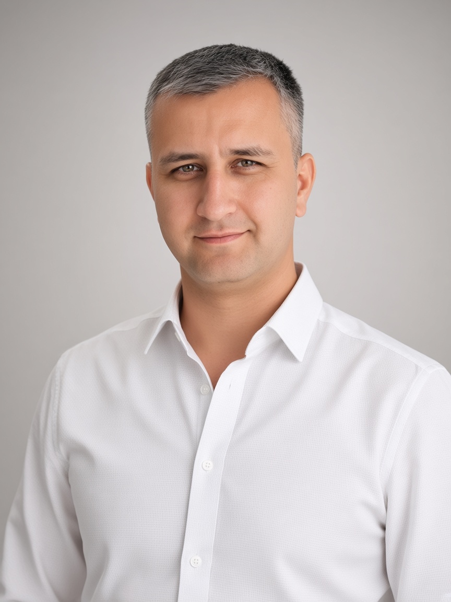
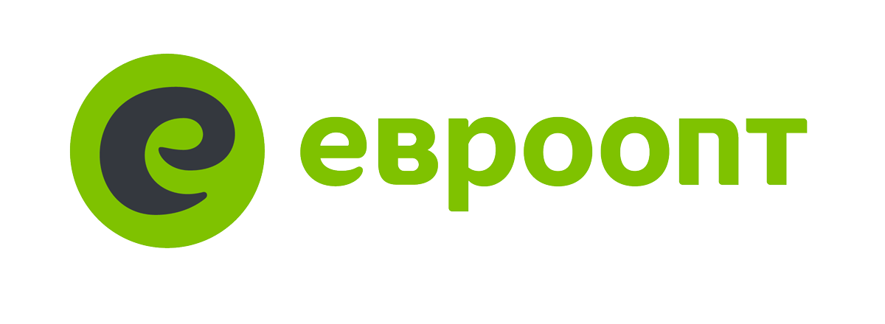
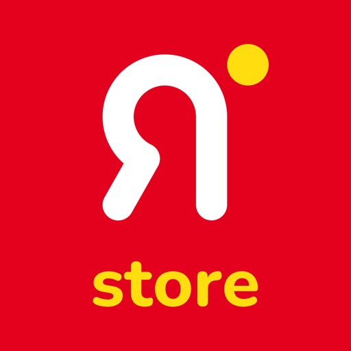
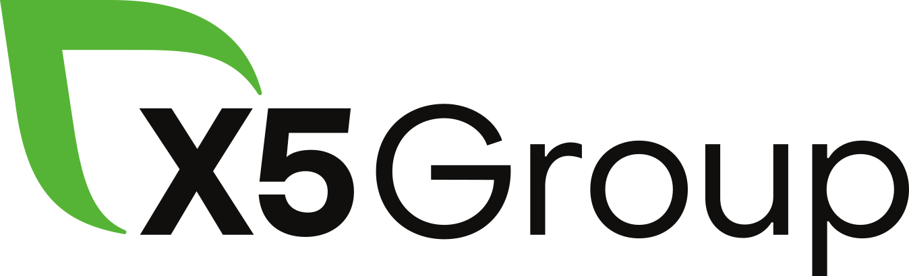
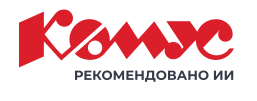
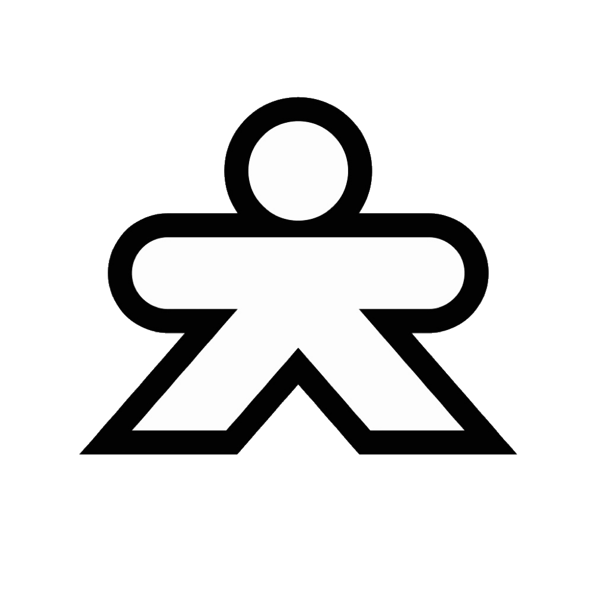
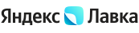
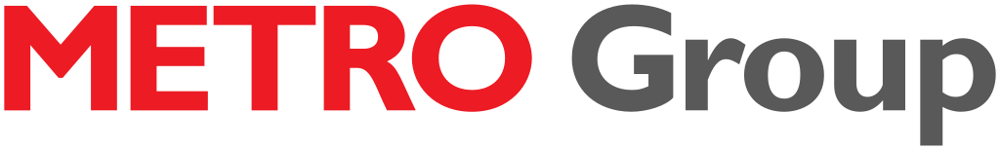

Понять, как всё работает сейчас
Интервью, данные, P&L, роли, информационные потоки и наблюдение за процессом. Фиксируем не регламент, а реальную работу компании.
Операционный консультант · Москва и удалённо
Погружаемся в работу компании, находим, где теряются деньги и время, проектируем целевую модель и доводим изменения до результата — с автоматизацией, подходящим программным обеспечением и ИИ там, где они экономически оправданы.
Не продаём технологию ради технологии. Сначала определяем проблему и ожидаемый эффект, затем подключаем нужную экспертизу: изменение процесса, программное решение, автоматизацию, ИИ или их комбинацию.

Подход От проблемы к устойчивому процессу
Не оптимизируем один участок в отрыве от остальных. Проверяем весь путь: от решения собственника и работы команды до IT-системы и результата для клиента.
Интервью, данные, P&L, роли, информационные потоки и наблюдение за процессом. Фиксируем не регламент, а реальную работу компании.
Определяем, что изменить в процессе, ответственности и показателях. Считаем эффект и выбираем приоритеты, которые дадут бизнесу результат.
Собираем план, подбираем ПО и инструменты автоматизации, ставим задачи команде, контролируем метрики и доводим процесс до стабильной работы.
Что делаем
Диагностика
Разбираем сквозной процесс, экономику, роли и ограничения. Отделяем симптомы от причин и показываем, где именно компания теряет ресурс.
01
Проектирование
Описываем новый процесс, зоны ответственности, контрольные точки и показатели. Формируем очередь инициатив с оценкой эффекта и сложности.
02
Технологии
Вместе с технологическими партнёрами определяем требования, сравниваем решения и организуем внедрение. ИИ и автоматизация появляются только там, где сокращают затраты, ошибки или время цикла.
03
Внедрение
Организуем проект, синхронизируем бизнес и IT, запускаем пилот, контролируем метрики и передаём команде процесс, который работает без ручного управления.
04
Команда и партнёры
Пётр лично погружается в бизнес, проектирует изменения и отвечает перед клиентом за общий результат. Для реализации мы подключаем проверенных специалистов и компании-партнёры с нужной компетенцией.
Проект не зависит от одного человека. Решения, задачи, регламенты и метрики фиксируются в общей системе. Команда клиента и партнёры сохраняют контекст, а созданные процессы продолжают работать после завершения проекта.
Управление
Клиент работает со мной по целям, приоритетам и результату — без необходимости самостоятельно координировать нескольких подрядчиков.
01
Бизнес
Подключаем специалистов по процессам, данным, финансам и управлению изменениями в зависимости от масштаба и содержания задачи.
02
Технологии
Партнёры помогают подобрать, настроить и внедрить программное обеспечение, интеграции, автоматизацию и решения на основе ИИ.
03
Устойчивость
Документируем целевую модель, роли, настройки и показатели. Обучаем команду клиента, чтобы система не держалась на внешнем консультанте.
04
Кейс Евроопт · Минск


ЯМИГОМПосле покупки сервиса быстрой доставки у компании было четыре даркстора и экономика, которая не сходилась. Было непонятно, какие процессы создают убытки и что менять в первую очередь.
Разобрал работу направления от маркетинга и ассортимента до склада, сборки, логистики и передачи заказа клиенту.
Связал экономику с реальными операциями: списаниями, производительностью сборки, ФОТ, маршрутизацией, поставками и мотивацией курьеров.
Собрал план изменений по процессам, команде, показателям и стандартам работы. Для каждого мероприятия зафиксировал ожидаемый эффект.
Перестроил сборку и логистику, внедрил стандарты планировки и мотивацию курьеров, сократил списания и операционные расходы.
За шесть месяцев проектной работы убыточная модель стала управляемой системой с прозрачными показателями и устойчивыми процессами.
Подтверждение Из рекомендательного письма
Пётр Алексеев работал консультантом по развитию сервисов доставки с сентября 2021 года по январь 2022 года. Он был приглашён для выстраивания бизнес-процессов быстрой доставки «ЯМИГОМ» в Минске.
«Результаты его деятельности до сих пор приносят неоспоримую пользу нашему бизнесу».
«С поставленными руководством задачами справился на отлично. Помимо высокого профессионализма, оставил впечатление приятного и целеустремлённого человека. Обладает стратегическим мышлением, пониманием и готовностью реагировать на изменения окружающей среды, навыками управления проектами и способностью координировать усилия многих для достижения целей компании».
Опыт Разные задачи — один системный подход
Ритейл, доставка, импорт и франчайзинг дали опыт работы со сложными сквозными процессами, большой операционной нагрузкой и кросс-функциональными командами.

Операционная модель импорта: закупки, порт, склад, логистика, качество и продажи.

Запуск нового e-commerce-направления с нуля: процессы, ассортимент, партнёры и MVP.

Рост B2B-направления через гипотезы, метрики и управление кросс-функциональной командой.

Масштабирование операционной модели на десять объектов в новом регионе.

Стандартизация открытия магазинов, тендеры и снижение капитальных затрат партнёров.
Комплексная перестройка убыточного направления — от диагностики до внедрения.
Логотипы являются товарными знаками соответствующих компаний и используются для обозначения опыта работы с проектами брендов.
Когда обращаться
Первый шаг
На первой встрече разберём ситуацию, ожидаемый бизнес-результат и поймём, нужна ли глубокая диагностика. Если задача вне нашей компетенции, скажем об этом прямо.